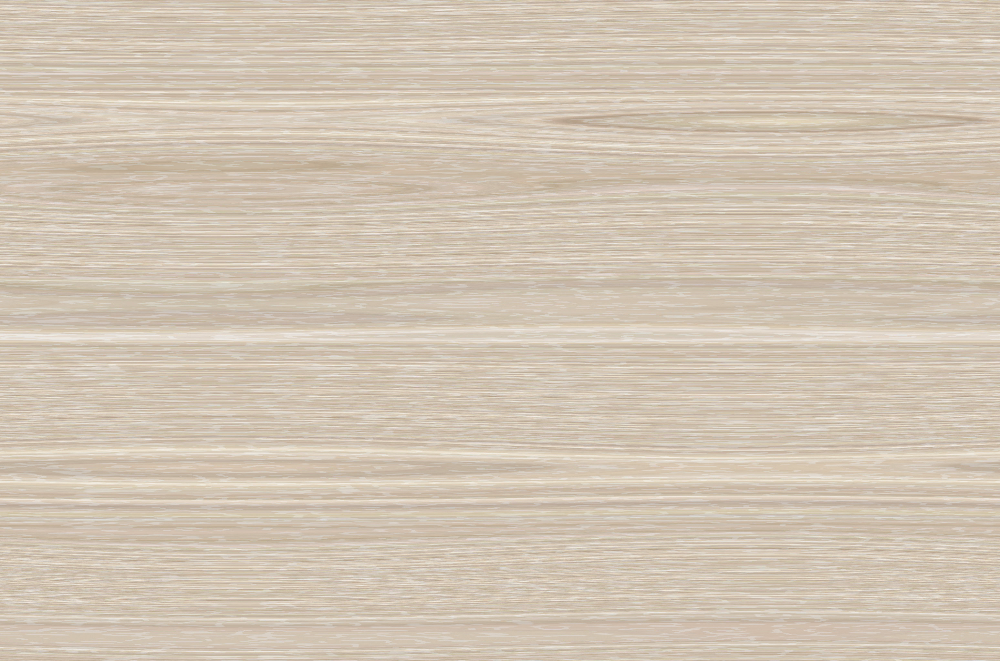

Desk Texture
I didn't like the lack of ambient light, as I typically think of wacom pens in a classroom with fairly even lighting. I added a directional light to remove the idea that the pen is on a pedastal or anything more than just a pen. It's just a pen.